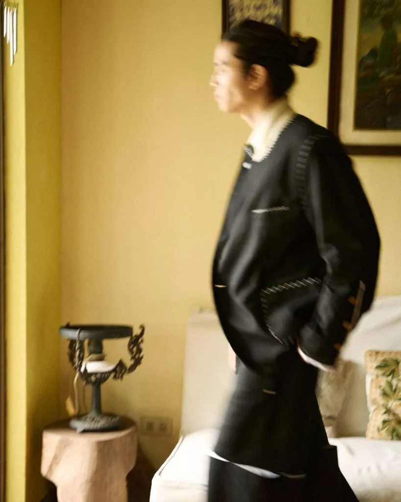
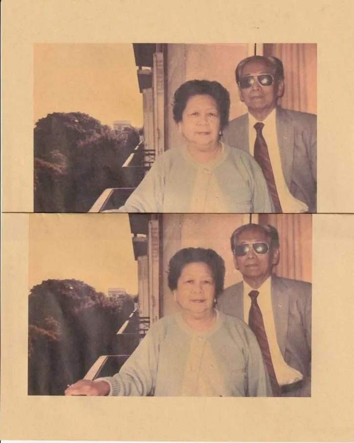
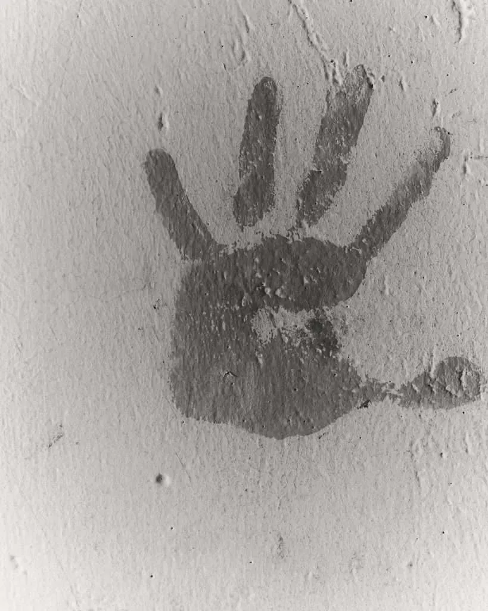

BAGASÁO is a contemporary brand from Manila, rooted in thoughtful design and Filipino craftsmanship. Each piece is created with intention—precise yet personal, meant not just to be worn but to live with. Rather than follow trends, BAGASÁO responds to real life. Collections are developed slowly, with attention to form, abrication, and feeling, designed to remain relevant over time. Central to the brand is collaboration with artisans and craftsmen, honoring both process and people. More than clothing, BAGASÁO is a point of view: valuing clarity over excess and intimacy over impression.
Joseph Bagasao, founder and creative director of BAGASÁO, established the Manila-based label in 2016 after studying at the Fashion Institute of the Philippines and working for the New York fashion house Josie Natori. His work reflects a quiet, considered approach—balancing precision and ease while creating clothing meant to live with the wearer, hold memory, and endure across generations. Collaborating closely with artisans and Filipino craftsmen, he grounds each piece in thoughtful design and enduring craft.


At BAGASÁO, clothing is more than an object—it is a companion to life. We believe garments hold memory, shape identity, and reveal themselves over time. Each piece is created with intention, not to chase trends but to respond to real life: its pace, its pauses, and its quiet strength.
Our philosophy is rooted in craft and consciousness. We value not only what we create, but who we create it with—working closely with artisans and Filipino craftsmen whose skill and spirit are woven into every garment. Through this dialogue, each piece carries a story of both maker and wearer.
BAGASÁO is a study in restraint and emotion: design that balances precision with ease, intimacy with universality. We create clothing meant to endure—objects that live with you, age with you, and move across generations with quiet certainty.